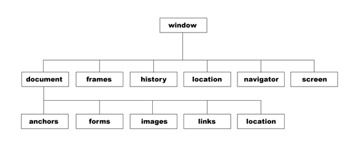

螃蟹 ---> 贝 壳
js ---> 浏览器
BOM（Browser Object Model 浏览器对象模型）

window是全局浏览器内置顶级对象
表示浏览器中打开的窗口（没有应用于window对象的公开标准，不过所有浏览器都支持该对象）
Window 对象表示一个浏览器窗口或一个框架。
在客户端 JavaScript 中，Window 对象是全局对象，所有的表达式都在当前的环境中计算。
也就是说，要引用当前窗口根本不需要特殊的语法，可以把那个窗口的属性作为全局变量来使用。
例如，可以只写 document，而不必写 window.document。
同样，可以把当前窗口对象的方法当作函数来使用，如只写 alert()，而不必写 window.alert()。
除了上面列出的属性和方法，window 对象还实现了核心 JavaScript 所定义的所有全局属性和方法。
-----------------------------------------------------------------------------------------------------
1、全局变量默认是挂在window下的
var a = 123;
alert(window.a) // 123
function fn () {
b = 30
}
fn()
console.log(b) // 30
console.log(window.b) // 30
2、window上的各种属性
name | window的名称 |
origin | 当前地址源 |
innerWidth | 浏览器宽度 |
innerHeight | 浏览器高度 |
length | frames的数量 |
scrollTop | 纵向滚动条滚动高度 |
scrollLeft | 横向滚动条滚动高度 |
console.log(window)
可以查看：
各种关于浏览器大小、位置的属性
各种常见事件
注意：window下的各种属性或方法名都不要直接用来作为全局变量命，会冲突
3、window下的子对象
A、location
- window.location.href 当前页面的 URL，可以获取，可以修改（页面跳转）。
- window.location.hostname web 主机的域名
- window.location.pathname 当前页面的路径和文件名
- window.location.port web 主机的端口 （80 或 443）
- window.location.protocol 所使用的 web 协议（http:// 或 https://）
- window.location.search 请求参数（？后面的内容）
window.location.reload();
刷新页面的方法。一般情况下给reload()传递一个true，让他刷新，并不使用缓存。
缓存的东西一般为js文件，css文件等。
用这个方法可以让自己不能动的页面动起来了。刷新当前页面。
B、window.navigator
navigator.appName 返回获取当前浏览器的名称。
navigator.appVersion 返回 获取当前浏览器的版本号。
navigator.platform 返回 当前计算机的操作系统。
以上属性已经在逐渐被抛弃了。
一个新的属性将替代这些属性。
navigator.userAgent 返回浏览器信息（可用此属性判断当前浏览器）
判断当前浏览器类型的代码：
function isBrowser() {
var userAgent = navigator.userAgent;
//微信内置浏览器
if(userAgent.match(/MicroMessenger/i) == 'MicroMessenger') {
return "MicroMessenger";
}
//QQ内置浏览器
else if(userAgent.match(/QQ/i) == 'QQ') {
return "QQ";
}
//Chrome
else if(userAgent.match(/Chrome/i) == 'Chrome') {
return "Chrome";
}
//Opera
else if(userAgent.match(/Opera/i) == 'Opera') {
return "Opera";
}
//Firefox
else if(userAgent.match(/Firefox/i) == 'Firefox') {
return "Firefox";
}
//Safari
else if(userAgent.match(/Safari/i) == 'Safari') {
return "Safari";
}
//IE
else if(!!window.ActiveXObject || "ActiveXObject" in window) {
return "IE";
}
else {
return "未定义:"+userAgent;
}
}
C、history
history.go(1) 参数可写任意整数，正数前进，负数后退
history.back() 后退
history.forward() 前进
D、screen: 屏幕
window.screen.width 返回当前屏幕宽度(分辨率值)
window.screen.height 返回当前屏幕高度(分辨率值)
4、window下的弹框方法
alert() prompt() confirm()
5、定时器
超时定时器 间隔定时器
setTimeout setInterval
clearTimeout clearInterval
6、window.onload
7、window.onscroll
var scrolltop=document.documentElement.scrollTop||document.body.scrollTop; //兼容
8、window.onresize
练习
猜数字游戏